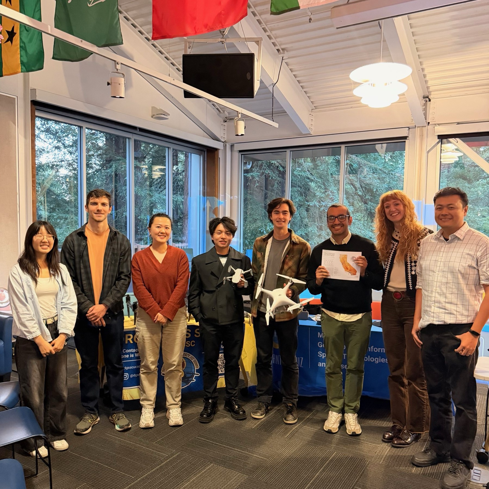
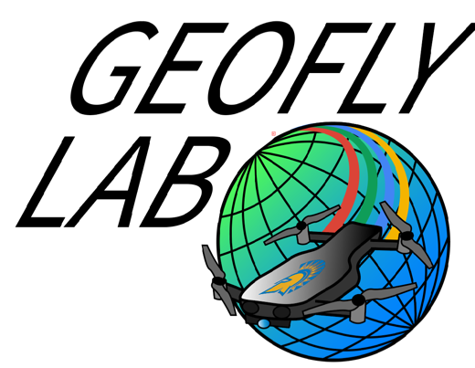

GeoFly Lab at UC Santa Cruz conducts peer-reviewed research in GIS, remote sensing, and UAV-based mapping, supported by NSF, NASA, and CAL FIRE. We build reproducible geospatial workflows for analysis, modeling, and education, and use GPU-accelerated computing to scale data processing and machine learning while training students in drone-enabled geospatial research.
Support and collaboration across academia, government, and community organizations.